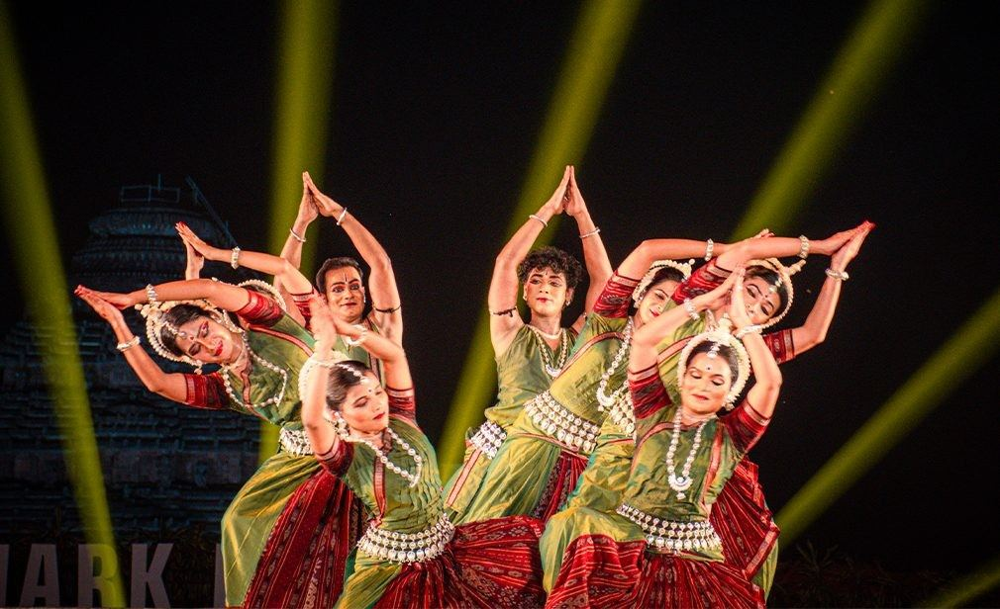

Festivals · Culture
Konark Dance Festival 2026
- Dates
- –
- Venue
- Konark Open Air Auditorium (by the Sun Temple)
- Location
- Konark, India
- Format
- In-person
- Category
- Culture
- Industry
- Classical dance
- Organiser
- Odisha Tourism
- Official website
- https://www.incredibleindia.gov.in/en/festivals-and-events/odisha/konark-festival-2026
About
Dates are local to the host city (India Standard Time, UTC+5:30).
Topics: Odissi, classical dance, music, heritage.
No organiser attendance figure found on the official pages fetched 24 Nov 2026. Ranked by our estimated size tier 'medium' (10,000-30,000 attendees/visits), a judgement from format, venue and scale, not an official number.